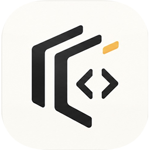

Hindsight Skill
Hindsight is an advanced skill for experienced software engineers seeking deep architectural reviews. Instead of simple linting or isolated file checks, Hindsight analyzes your entire project structure and documentation against a defined functional goal.
How it Works: You define the primary purpose of your service (e.g., "This API handles user authentication"). Hindsight ingests up to 300 files/docs (a guideline you can override), reads the documentation first to learn what was intended, then judges the code against that intent and your goal. It proposes architectural improvements and ranks the findings by Impact/Effort.
Current Scope: Hindsight is an Agent Skill for Claude Code, Codex CLI, Gemini CLI, and GitHub Copilot. Each review produces inHindsight.md for people and inHindsight.json for scripts and agents. Each finding comes with a ready-to-paste fix prompt and a "Done when" check. The review also includes a Dependency Health Scorecard and tracks which earlier findings you've resolved. It requires an explicit goal, and can run unattended in CI or under another agent.
Note Hindsight reads a project's documentation before its code to learn what was intended, so a short intent document at your repository root makes every review sharper. examples/Project.md is a sample with three sections (Idea, Ambition, Goal); it is also Hindsight's own spec. Copy it to your repo root as Project.md and replace its content with your project's. The skill still runs without one, inferring intent from your goal, README, and other docs. TL;DR Add a Project.md to your repo with 3 defined sections: Idea, Ambition, Goal.
Documentation
Installing Hindsight
requirements, and install commands for each supported tool.
Using Hindsight
the inputs a review needs, and what it writes.
Running unattended
CI, headless runs, and delegation from another agent.
Helper scripts
running the bundled scripts on their own.
Developing the skill
the test suite and the opt-in accuracy eval.